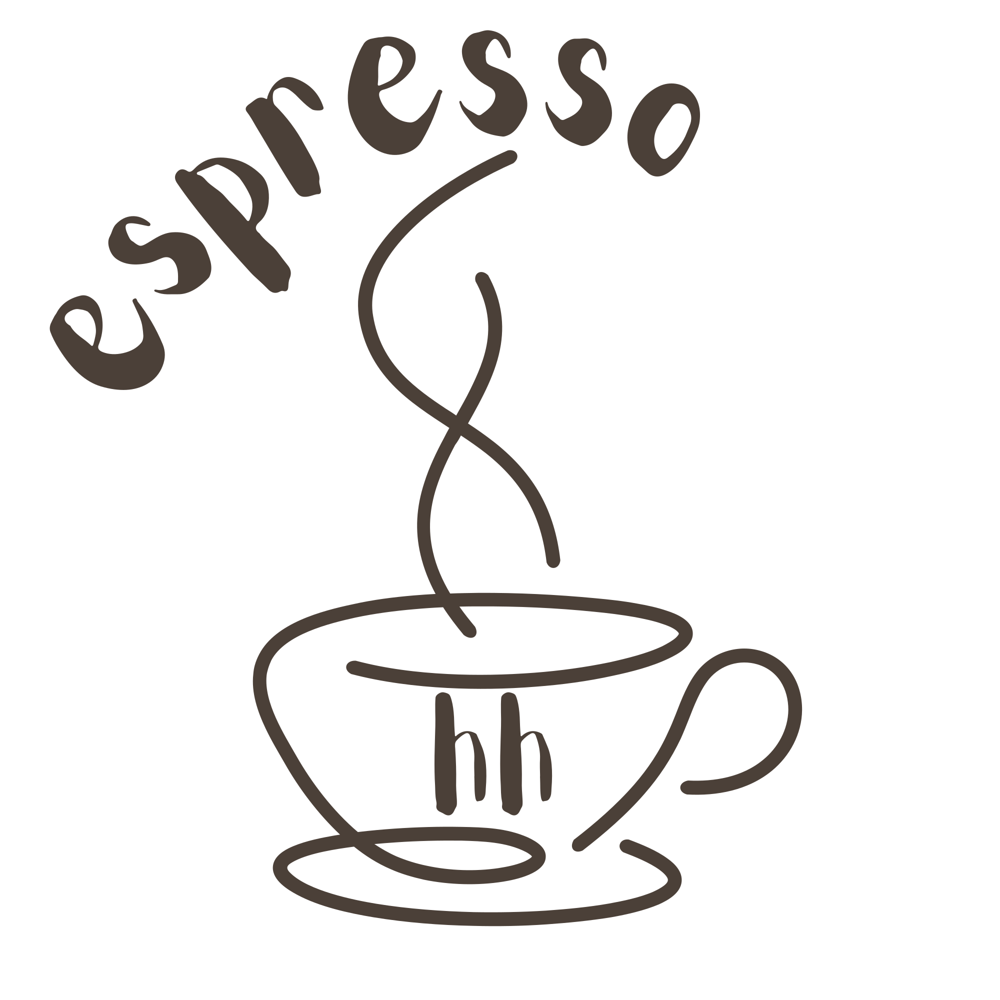

Espressotagebuch
Über mich

Moinsen!
Ich bin espresso-begeistert und neu in der Stadt. Deshalb möchte ich Hamburgs beste Cafés entdecken. Auf dieser Website und bei Instagram halte ich meine Kaffee-Abenteuer fest – quasi als privates Notizbuch.
Auch meine Erfahrung mit Kaffee zu Hause wächst stetig. Deshalb gibt es hier eine eigene Rubrik dafür. Vor Kurzem habe ich Bohnen entdeckt, die meiner Mokkakanne ein spannendes Aroma und eine angenehme Säure verleihen. Ich lerne immer weiter ((:

Mein Traum Kaffe-Spot
An einem Ort wie diesem würde ich gern meine Bialetti und einen Campingkocher dabeihaben, um hoch oben einen Mokka zu kochen – am liebsten mit so einer Aussicht. Aufgenommen in Österreich ((:
Hot Take: Je weiter oben man ist, desto intensiver wirkt der Koffeinkick (;
Make it possible.
Make it memorable.